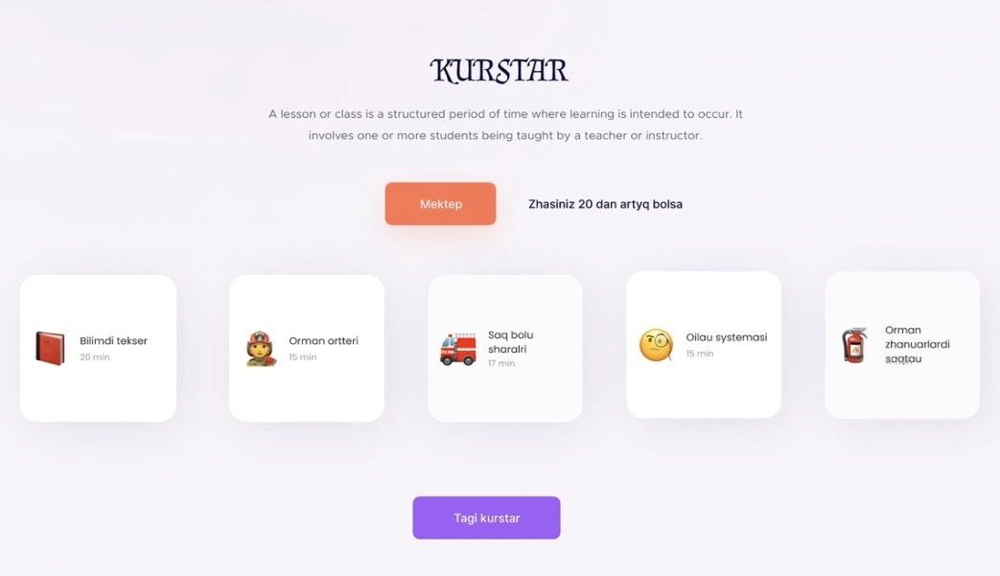
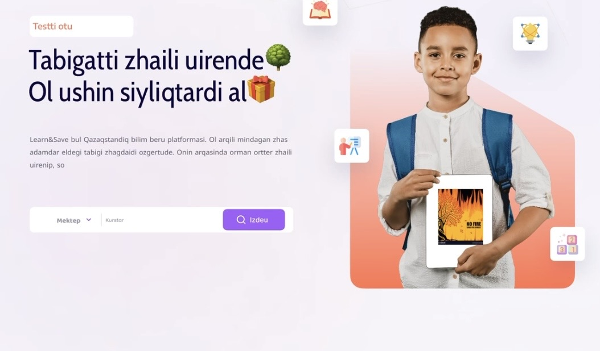
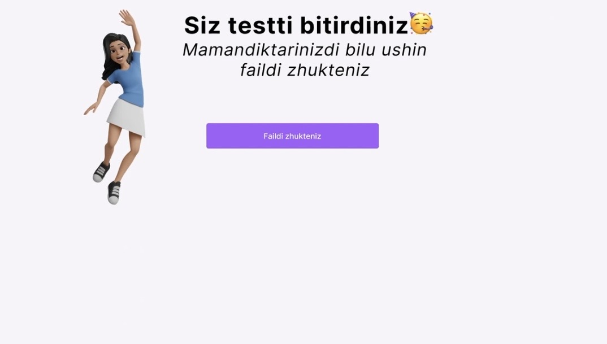
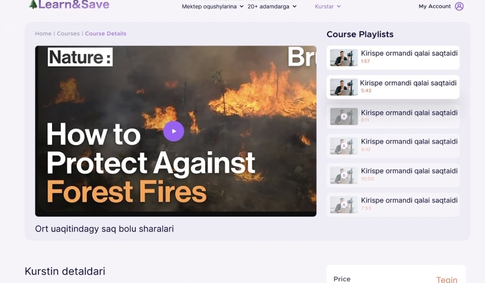

Abay Wildfire Education Platform
A web platform built in response to the 2023 Abay Region wildfires in Kazakhstan, developed for a national hackathon to improve public wildfire preparedness — 3rd place among roughly 15 competing teams.

Overview
Following the 2023 Abay Region wildfires, I led an interdisciplinary team in a national hackathon to build a web platform addressing a clear gap: the public lacked accessible resources on wildfire preparedness, emergency response, and real-time fire risk awareness. Over the course of the event, our team designed and built a course-based education platform aimed at teaching both children and adults how to recognize risk and respond safely.
As team lead, I coordinated the project timeline, delegated work between our software developers and content creators, and prepared and presented the final solution to the judging panel. We also scoped a companion mobile app concept to extend the platform's reach. The project placed 3rd out of roughly 15 competing teams.
The Platform
The platform structured wildfire education as a series of short courses and interactive lessons — covering topics like recognizing fire risk, emergency response, and safe evacuation — mixing video content, quizzes, and short lessons aimed at different age groups, including dedicated content for children.



Results & Takeaways
Leading a team under hackathon time constraints meant making fast decisions about scope, splitting work between development and content creation, and keeping the group aligned on a single deliverable. Our platform's focus on accessible, course-based education helped it stand out among the competing teams, earning us 3rd place overall.
This project was my first experience leading a technical team outside of coursework, and it sharpened my ability to coordinate people with different skill sets — developers and content creators — toward a shared deadline.